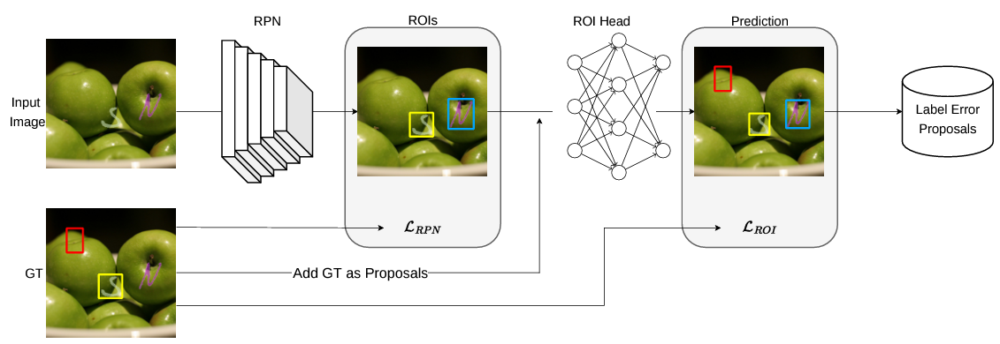
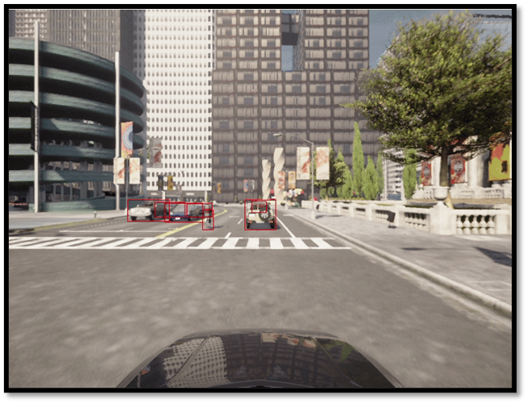
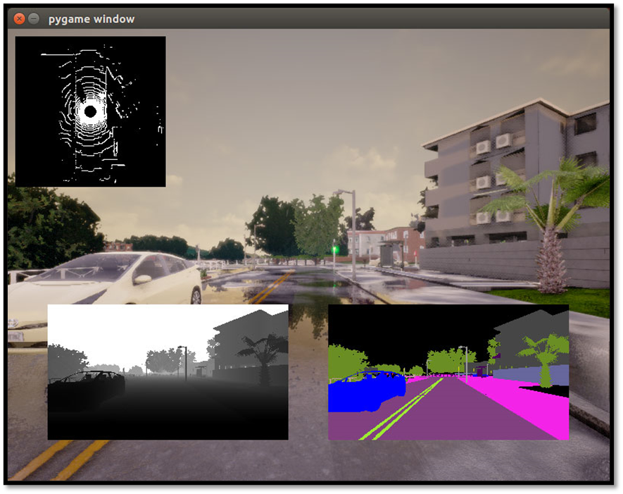
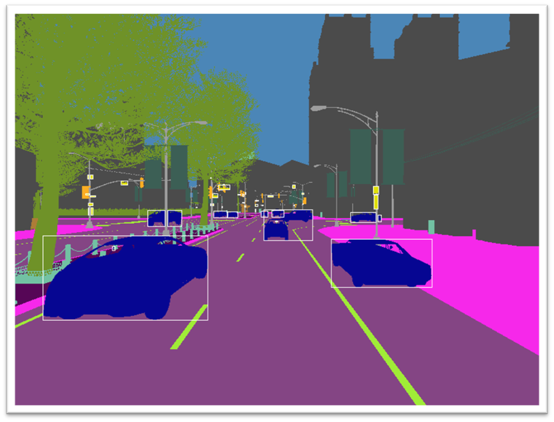
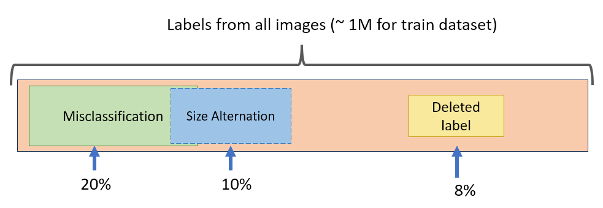
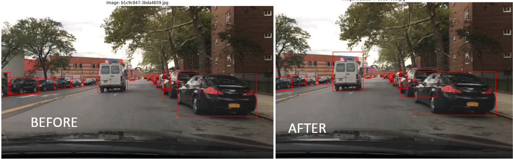
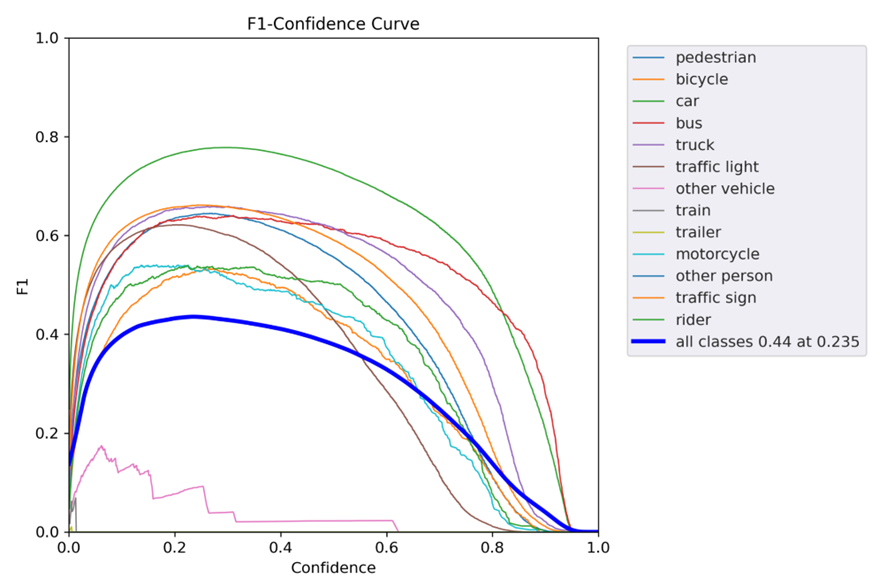
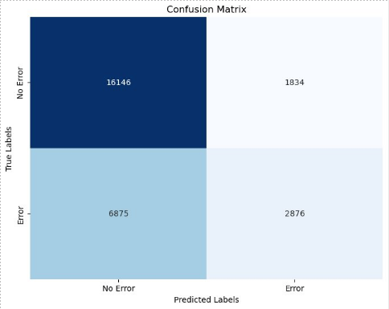
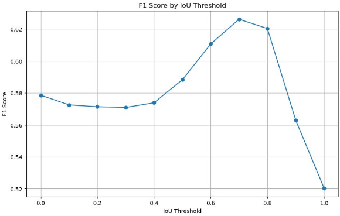

B-Plus Co-op: Labels Error Detection for Autonomous DrivingThis project is a collaboration with B-Plus, focusing on detecting label errors in autonomous driving scenarios using deep learning models. We utilized proprietary B-Plus data, along with BDD100k, KITTI, and CARLA simulated datasets to train a model that flags erroneous labels in driving images. Project OverviewThe goal is to improve the accuracy of autonomous driving systems by identifying incorrect labels in large-scale driving datasets. The model takes an image and its labels, and outputs a binary indicator: 1 for erroneous labels and 0 for correct labels. A custom loss function, Error Prone Labels (EPL) and Error Free Labels (EFL), was implemented to optimize this prediction process.

Training Time: Approximately 1.5 hours per epoch using a GPU.
Additionally, we experimented with CleanLab, an open-source tool for label error detection, but it performed poorly in detecting errors within the complex autonomous driving datasets. Technologies Used:
CARLA SimulatorWe utilized the CARLA Simulator for generating realistic autonomous driving scenarios. The simulator provides a controlled environment where we can introduce and analyze label errors.




Figure: CARLA simulator running autonomous driving scenarios. Error IntroductionManual and automated label errors were introduced in both the proprietary B-Plus data and CARLA-generated datasets. These errors simulate real-world mislabeling issues, such as incorrect bounding boxes or object misclassifications.


Training and Model PerformanceThe model was trained on a mixture of B-Plus, BDD100k, KITTI, and CARLA datasets. Below is the learning curve demonstrating the reduction of error during training. The model showed promising results in identifying label errors across various datasets, significantly improving the robustness of the autonomous driving system.

Results on KITTI DatasetThe model was tested on the KITTI dataset, where it effectively identified erroneous labels. Below is an example of the model's predictions on a KITTI test set, where red boxes indicate predicted errors and green boxes indicate correct labels.


|